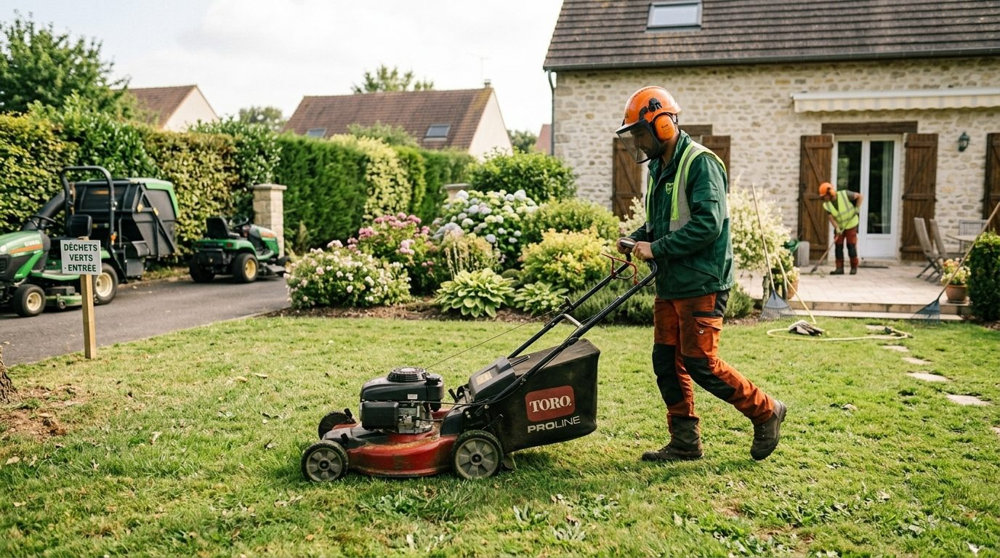

À propos
Un paysagiste de proximité.
SARL installée au Val-Saint-Germain depuis 2013, A.R Paysage aménage et entretient les jardins du secteur.


L'entreprise
Du jardin à créer au jardin à entretenir.
A.R Paysage est une SARL créée en 2013 au Val-Saint-Germain, en Essonne. Son activité déclarée : les services d'aménagement paysager.
Pour un projet ou un entretien régulier, le plus simple est d'en parler directement avec l'entreprise.
- Activité
- Services d'aménagement paysager
- Forme
- SARL
- Depuis
- 2013
- SIREN
- 791 175 508
Zone d'intervention
Le Val-Saint-Germain et alentours.
A.R Paysage travaille au Val-Saint-Germain et dans les communes voisines. Pour savoir si votre jardin est dans le secteur, appelez l'entreprise.
Contacter l'entrepriseUne question ?
Un projet ou une demande d'intervention ?
Le plus direct reste un appel à l'entreprise.
06 99 20 18 49